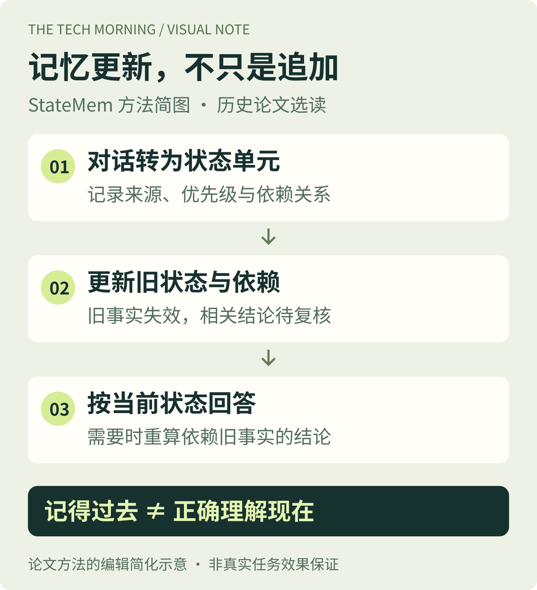

StateMem关注的是：记住的东西，现在是否仍然有效？

依据StateMem论文第5节绘制的编辑简化示意；这是方法解释，不是效果保证或产品界面。 原始出处 ↗ · 核验：2026.10.13方法将每轮对话拆成带来源、优先级与依赖关系的状态单元。更新发生后，旧事实被置为失效，相关结论沿依赖图标为待复核，回答时据当前状态重新计算。
作者实验 / 测当前状态回答
自建 StateMemBench 包含234个多会话场景、322个测评问题。以 DeepSeek-V4-Flash 为底座，作者报告当前状态回答准确率从最强同底座基线的20.5%升至36.3%，提升15.8个百分点。这不是独立实测，也不是通用任务成功率。
局限与适用场景
合成场景与方法针对的陷阱同源，每项配置仅运行一次，逐轮抽取还增加调用成本。编辑判断：适合启发项目进度、偏好变更等长期助手的状态设计；真实任务仍应单独测更新冲突、错误失效和依赖重算，不能直接套用论文分数。
历史选读，非今日新发。论文：Can Agent Memory Systems Track Evolving State?；初版与本期所读v1：2026.08.20；全文核验：2026.10.13（UTC+8）。